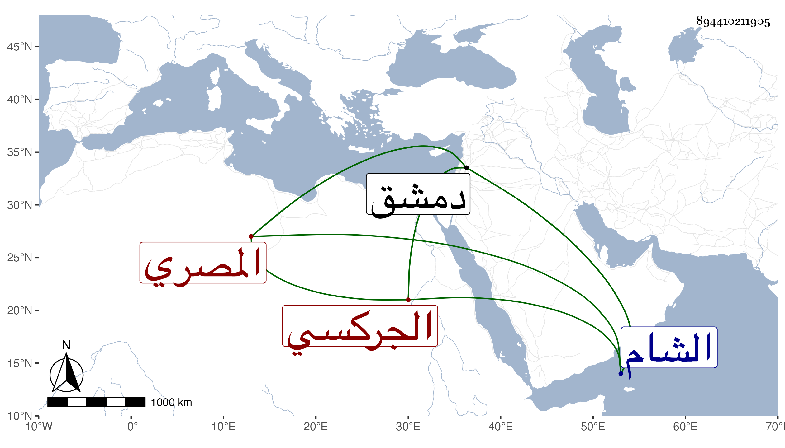

0902Sakhawi.DawLamic.ITO20230111-ara1.EIS1600.894410211905
Biography ID: 894410211905
562
فرج بن برقوق بن أنس الناصر الزين أبو السعادات بن الظاهر الجركسي المصري ، ولد في سنة إحدى وتسعين وسبعمائة في وسط فتنة يلبغا الناصري ومنطاش فسماه أبوه بلغاق ثم سماه فرجا فكان اسمه الحقيقي هو الأول ، وأمه أم ولد رومية ، استقر في المملكة بعهد من أبيه وبعده في شوال سنة إحدى وثمانمائة وسنه دون عشر سنين . واختلف مماليك أبيه عليه كثيرا ونزل الشام مرارا في مماليك أبيه وغيرهم وتصافف هو في عسكره وشيخ ومن انضم إليه باللجون فانكسر وفر على الهجن إلى دمشق فدخل قلعتها وتبعه شيخ ومن معه فحاصروه إلى أن نزل إليهم بالأمان فاعتقل وذلك في صفر سنة خمس عشرة واستفتوا العلماء فأفتوا بوجوب قتله لما كان يرتكبه من المحرمات والمظالم والفتك العظيم فقتل في ليلة السبت سابع عشر صفر المذكور ودفن بمقابر دمشق وكان سلطانا مهيبا فارسا كريما فتاكا ظالما جبارا منهمكا على الخمر واللذات طامعا في أموال الرعايا ، وخلع في غضون مملكته سنة ثمان وثمانمائة بأخيه المنصور عبد العزيز نحو شهرين ثم أعيد في جمادى الآخرة منها وأمسك أخاه فحبسه ثم قتله وترجمته تحتمل كراريس فأكثر معروفة من الحوادث فلا نطيل بها ، وهو في عقود المقريزي باختصار .
